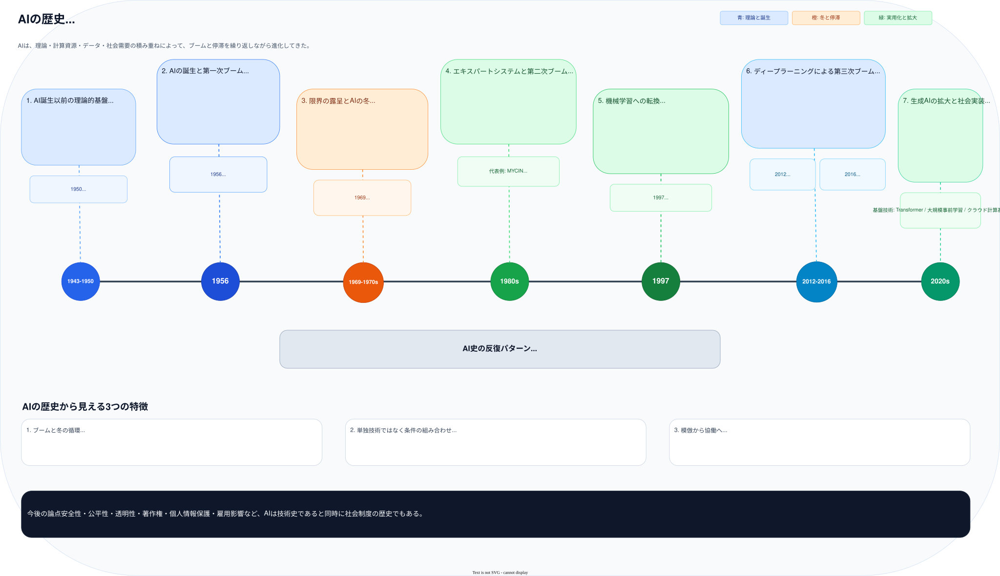

チューリングの計算理論と、マカロック=ピッツの人工ニューロンが出発点になった。
AIの歴史 プレゼンテーション
前後ボタン、左右キー、ドット操作で1枚ずつコマ送りできます。印刷時は全スライドを1ページずつ出力します。
構成
全7枚 / 発表向け要約版
1 / 7
AI History Deck
AIの歴史
01
理論的基盤から生成AIの社会実装までを、ブームと停滞の反復という視点で整理する。技術史だけでなく、制度・倫理・利用拡大まで含めて全体像を押さえる発表用スライド。
3回
大きなAIブーム
80年+
理論から現在までの流れ
2020s
生成AIが社会実装を加速
テーマ: AIはどのように発展してきたか
AI History Slides
Overview
AIの歴史は一直線ではなく、段階的に加速した
02
全体像

理論の準備、AIの誕生、冬の時代、実用化、機械学習、深層学習、生成AIという順で理解すると流れがつかみやすい。
見るべきポイント
- 技術の進歩は理論だけでは起こらない。
- 計算資源とデータ環境が大きな転換点を作る。
- 社会からの期待が高まるほど、限界も露出しやすい。
理論
計算資源
データ
社会需要
ポイント: ブームの背後に条件の蓄積がある
2 / 7
Early Phase
理論的基盤から第一次ブームへ
03
ダートマス会議でArtificial Intelligenceが研究分野として定着した。
推論や探索を中心に、人間の思考を記号操作で表そうとした。
限定領域で成果が出たため、人間並み知能の早期実現が期待された。
キーワード: チューリングテスト / ダートマス会議 / Logic Theorist
3 / 7
Winter and Recovery
限界の露呈、AIの冬、そして特化型実用化
04
- 現実世界の複雑さに記号処理が対応しきれなかった。
- 探索空間の爆発で実用的な計算が難しかった。
- パーセプトロンの限界も失望を強めた。
- 1980年代にエキスパートシステムが注目された。
- MYCINなどが限定領域で高い判断性能を示した。
- 企業利用が進み、AIの実務価値が可視化された。
- 専門知識のルール化に時間とコストがかかった。
- 環境変化への更新が難しかった。
- 汎用性に乏しく、持続的拡張が難しかった。
ポイント: 実用化は進んでも、知識獲得の壁で拡張が止まった
4 / 7
Machine Learning
ルールからデータへ: 機械学習への転換
05
変化の本質
AI研究は、人間が細かくルールを書く発想から、データから規則性を学習する発想へ大きく移動した。これにより、認識・予測・推薦など現実的な応用が一気に広がった。
決定木
ベイズ推定
SVM
HMM
象徴的出来事
1997年、IBMのDeep Blueがチェス世界王者カスパロフに勝利した。これは特化型AIの成果だが、人間の知的領域に計算機が本格的に入り込んだことを社会に強く印象づけた。
キーワード: データ駆動化が後の深層学習ブームの土台になった
5 / 7
Deep Learning to Generative AI
第三次ブームから生成AI時代へ
06
深層学習が従来手法を大きく上回り、画像認識の性能向上がブームを決定づけた。
直感が必要と考えられていた囲碁でもAIが高い能力を示し、社会的インパクトが拡大した。
LLMとマルチモーダルAIにより、文章、画像、音声、動画まで生成対象が広がった。
- 大規模データ
- GPUなどの高速計算資源
- 学習アルゴリズムの改良
- 画像認識
- 自然言語処理
- プログラム生成
- 著作権
- バイアス
- 偽情報と雇用影響
ポイント: 性能向上と社会的課題が同時に拡大している
6 / 7
Takeaways
AI史から分かる3つの結論
07
期待が高まるほど、現実とのギャップも大きく見えやすい。評価は短期成果だけでなく、基盤整備も含めて見る必要がある。
理論、計算資源、データ、社会需要がそろって初めて、本格的な社会実装が進む。
現在のAIは人間の代替だけではなく、意思決定や創造活動を支援・拡張する存在として位置づけられている。
今後は性能競争だけでなく、安全性、公平性、透明性、法制度との整合をどう作るかがAI活用の質を決める。
締め: AIの歴史を知ることは、AIの使い方を考えることでもある
7 / 7